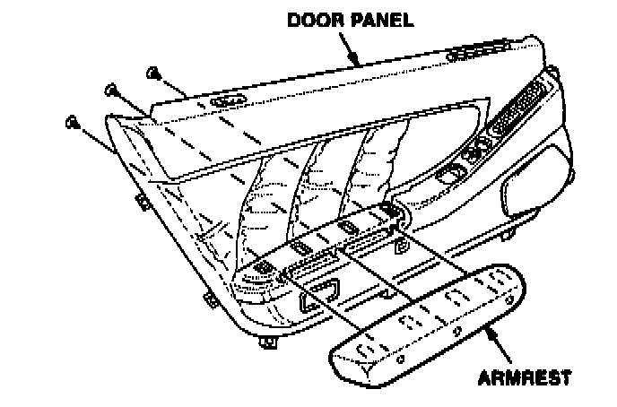
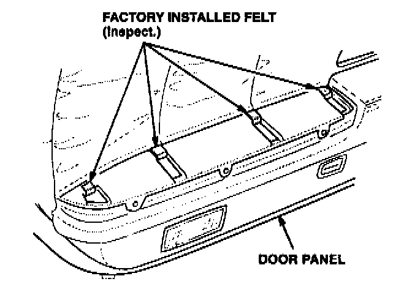
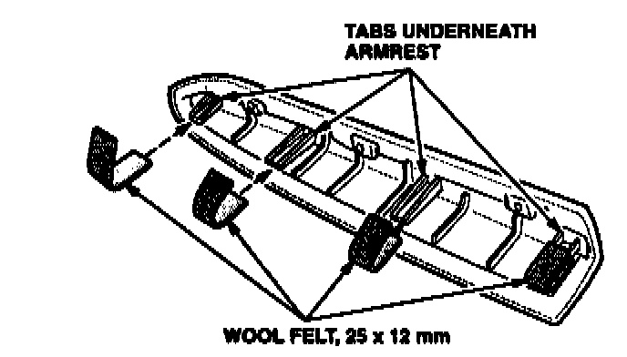
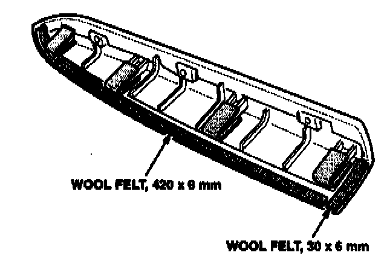

Armrest - Pop or Creak
November 18, 1997BULLETIN NO.
97-041
VIN APPLICATION
Thru VIN
JH4NA1...VTOOO301
MODEL
NSX
YEAR
1991-97
Pop or Creak From the Armrest
SYMPTOM
A popping or creaking sound comes from the door armrest when it is pushed on.
PROBABLE CAUSE
The armrest is rubbing against the door panel.
CORRECTIVE ACTION
Install wool felt on the contact areas between the armrest and the door panel. Do both doors.
REQUIRED MATERIALS
Wool Felt: P/N 06993-SA5-O00
WARRANTY CLAIM INFORMATION
In warranty:
The normal warranty applies.
Operation number: 843001
Flat rate time: 1.4 hours
Failed P/N: 83583-SLO-AOOZA
Defect code: 042
Contention code: B07
Template ID: 97-041A
Skill level: Repair Technician
Out of warranty:
Any repair performed after warranty expiration may be eligible for goodwill consideration by the District Technical Manager or your Zone Office. You must request consideration, and get a decision, before starting work.
REPAIR PROCEDURE
1. Remove the inner door panel. Refer to page 20-7 of the 1997 NSX Service Manual.

2. Place the door panel on a clean, soft surface. Remove the armrest mounting screws. Remove the armrest.

3. Inspect the factory-installed felt in the door panel cutout for the armrest. Make sure it is in good condition, and is as wide as the cutout. If not, install new felt before going on to step 4.
4. Cut four 25 x 12 mm pieces of wool felt.

5. Apply the four pieces of wool felt over the four tabs on the armrest.
6. Cut a 420 x 6 mm piece of wool felt.

7. Install this piece of wool felt along the edge of the armrest where it contacts the door panel leather insert.
8. Cut a 30 x 6 mm piece of wool felt.
9. Install this piece of wool felt on the front of the armrest.
10. Reinstall the armrest in the door panel.
11. Reinstall the door panel on the door.
12. Repeat this procedure on the other door.